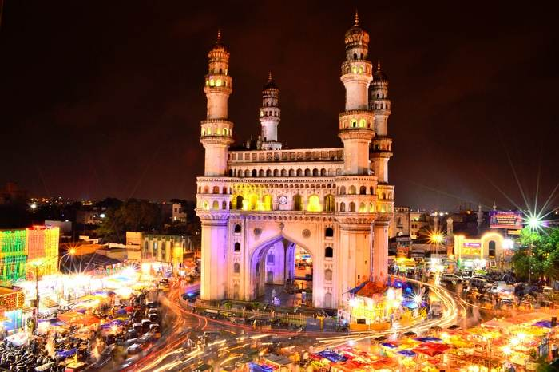
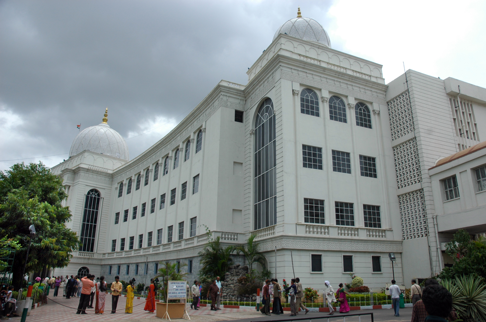
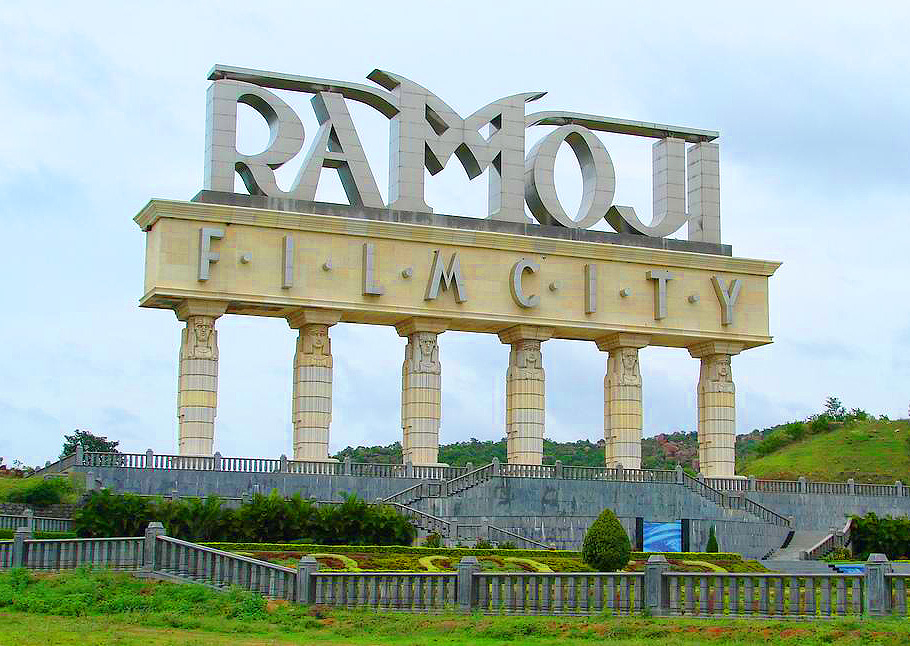
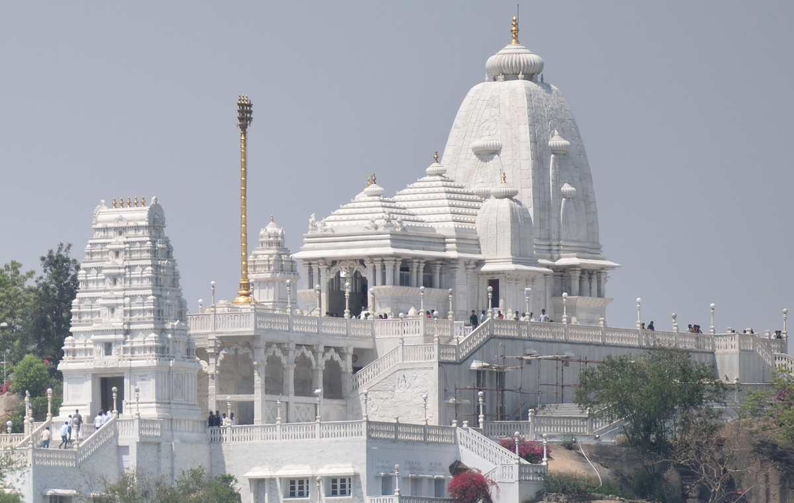
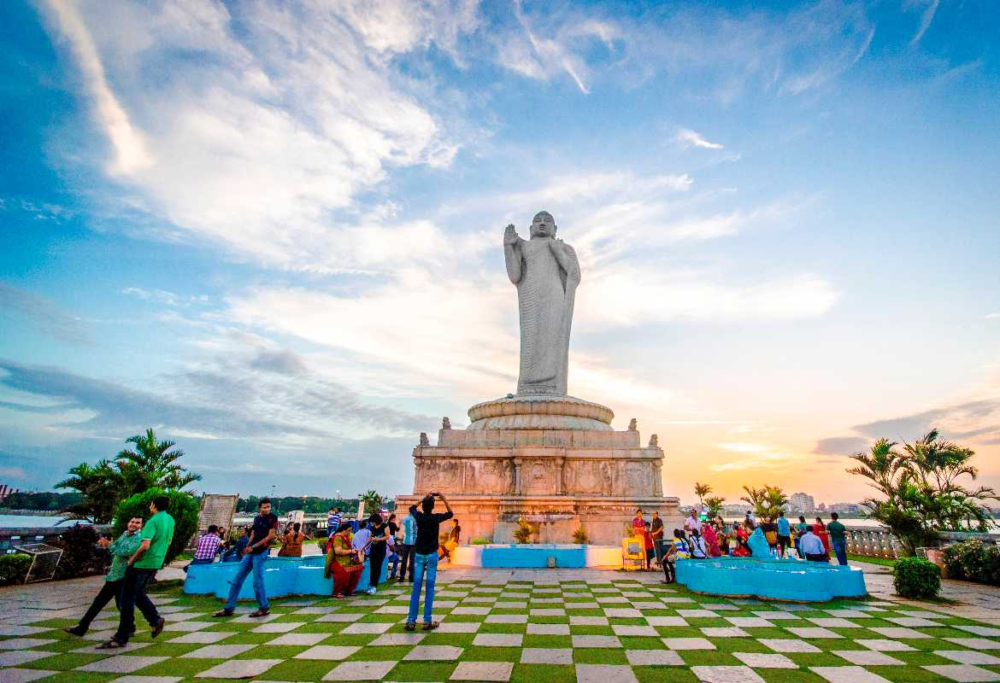

Charminar
Charminar stands tall in the heart of the city since 1591. It was built by Mohammed Quli Qutub Shah reflecting Cazia style. Charminar’s unique architecture and detailed design with four 48.7 meter high minarets used to warn the king’s men, is something to marvel at! It is one of the most famous places to visit in Hyderabad. With Mecca Masjid, Bhagyalakshmi Temple Laad Bazaar and Meena Bazaar right beside the monument, you can witness the vividness of this city here. If you love history and street shopping, Charminar is a must-visit place in Hyderabad for you!
Timings: 8 am – 5:30 pm
Location: Pathergatti Road, Hyderabad
Golkonda
Predating the Charminar, built by the Kakatiyas Dynasty in the 13th century, Golkonda witnessed reigns of many dynasties over the history—from Bahmani, Qutub Shahis, to even Mugal regimes. Constructed on a granite hill, the citadel is a true reflection of ancient architecture and engineering. The most appealing feature of the monument is it's acoustic: The monument resonates sounds through the wall right from the entrance, Fateh Darwaza, to the highest point, Bala Hissar. Golkonda is one of the best places to visit in Hyderabad. Witness the rich and instructive history lively resting in the rocks of the monument.
Location: Ibrahim Bagh, Hyderabad.
Timings: 9 AM - 5:30 PM
Makkah Masjid
Makkah Masjid is one of the oldest and largest mosques in India. Located close to landmarks of Charminar, Laad Bazaar and Chowmahalla Palace, the mosque holds 400-year-old history in its bricks. The mosque gets its name from Macca, the holiest site for Muslims: The monument was constructed from the soil brought in from Mecca upon the order of the late Muhammad Quli Qutb Shah, the fifth ruler of the Qutb Shahi dynasty. The three arched facades were carved from a single piece of granite and it took more than 8,000 workers to build the mosque.
Location: Ghansi Bazaar, Hyderabad
Timings: 4 AM - 9:30 PM
Salarjung Museum
Home to some of the most stunning art collections and artifacts, Salarjung Museum- the legacy of the Salar Jung family is one of the famous places in Hyderabad. It was inaugurated on 16 December 1951 by the late prime minister, Jawaharlal Nehru. The antiquities in the museum were held private by the Salar Jung family before becoming public in 1951.
The museum showcases a variety of artworks, from Indian Art, Art of the Middle East, European Art, to even Far Eastern Art. Moreover, Indian sculptures, Persian carpets, bronze statues, Chinese porcelain, wood carvings and many more are some of the attraction.
Location: Darulshifa, Hyderabad.
Timings: 10 AM - 5 PM


Ramoji Film City
Ramoji Film City - one of the biggest of the largest film studio complex in the world, is one of the best places to visit in Hyderabad. Build by a Telugu film producer Ramoji Rao in the year 1996, it's the largest integrated film city in the state.Home to some of the most stunning art collections
It is home to a large range of gardens and sets that will keep you intrigued all day long! Not just that, this place also conducts several shows to let people see how it all works in films! If you want to observe the film industry up close, it is the best place for you.it's the largest integrated film city in the state.It is home to a large range of gardens and sets that will keep you
Hayathnagar Mandal
Timings: 9 am – 5:30 pm
Birla Mandir
Birla Mandir stands tall in pristine white and enhances the skyline of Hyderabad. This Hindu temple was established in 1976 by Swami Ranganathananda of Ramakrishna Mission. Built atop 280 feet high on Kala Pahad, Birla Mandir is spread across a 13-acre plot.
With an 11 feet tall idol replica of Tirupati Venkateshwara, this temple also has an exotic architectural design, which includes visuals of scenes from Ramayana and Mahabharata. The best panoramic views of the city, exquisite architecture and the peaceful vibrations of Birla Mandir make it one of the must-visit places to visit in Hyderabad.
Location: Hill Fort Road
Timings: 7 am – 12 pm & 2 pm-9 pm


Hussain Sagar Lake
Hyderabad is also home to the largest human-made heart-shaped lake - the Hussain Sagar Lake. It is one of the most popular tourist places in Hyderabad.
Built in the 16th century by Ibrahim Quli Qutb Shah in 1563. With a gigantic statue of Gautam Buddha in the center, this lake has been the top attraction of the city for decades.Hussain Sagar lake is also Called Tank Bund. The attraction also has 3 km long dam wall and connects the twin cities of Hyderabad and Secunderabad. It is bordered by Indira Park, Sanjeevaiah Park, and Lumbini Park on 3 sides and is truly a relaxing and calming getaway from the city.It is one of the most popular tourist places in Hyderabad.
Location: Tank Bund Road
Timings: 8 am – 10 pm